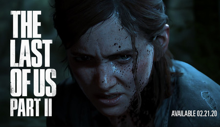

Artículo 1:
Si hay algo que caracteriza a Naughty Dog es su atención por el detalle y el realismo. Ya solo tener a Ellie y a los enemigos en pantalla ocupa mucha memoria, porque cada uno de ellos tiene montones de reacciones y animaciones diferentes. Ellie tiene un sistema de animaciones completamente nuevo llamado motion mapping. No solo Ellie, todos los personajes lo tienen.
Hace que el movimiento responda mejor, y al mismo tiempo sea más realista. En definitiva, creo que Ellie es uno de los personajes que mejor se controla y se ve en un juego de acción en tercera persona.The Last of Us Parte II tiene previsto salir el próximo 21 de febrero de 2020. Será uno de los últimos grandes exclusivos que veamos de PS4.